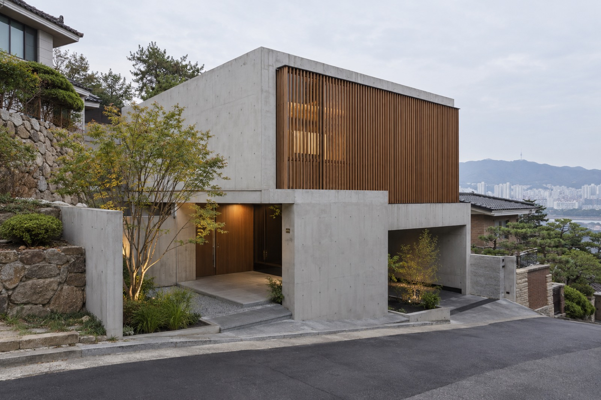
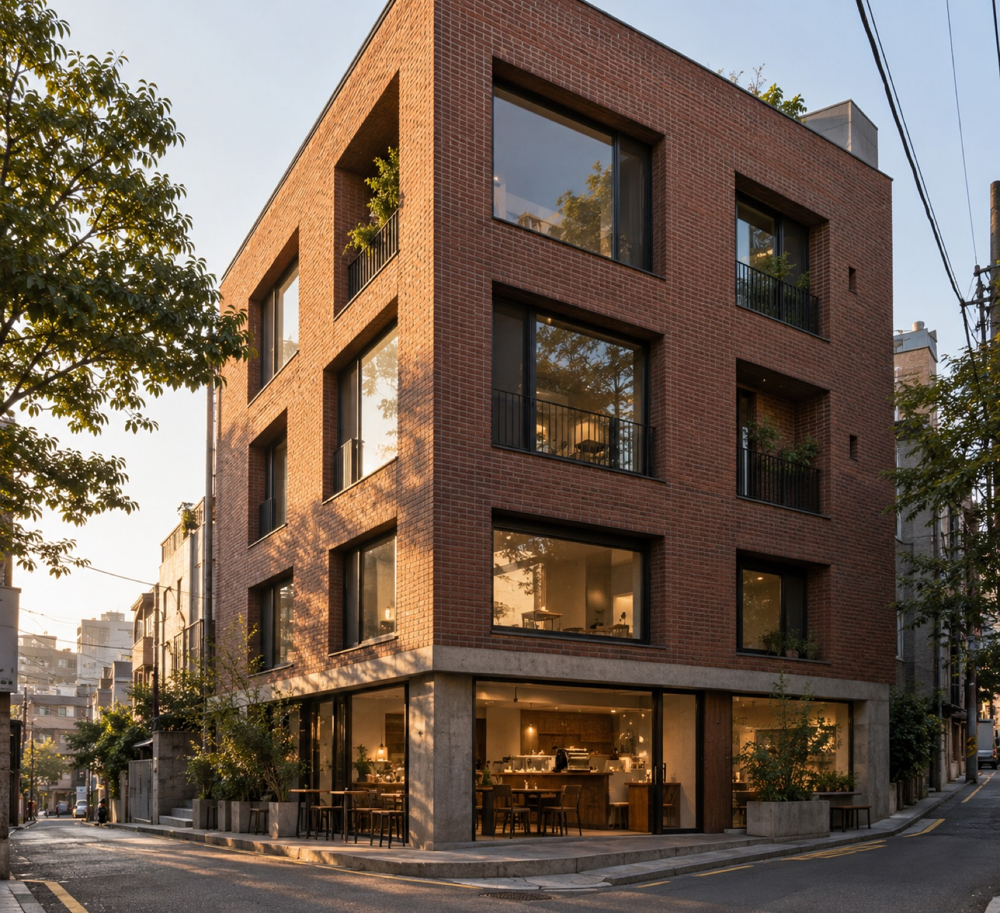
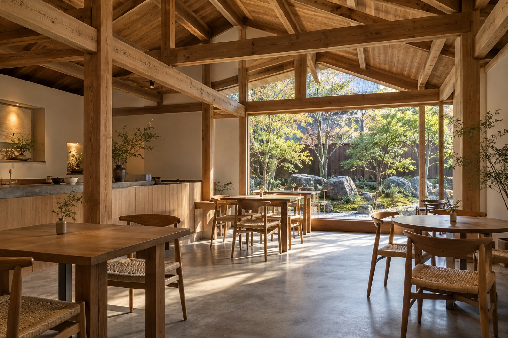
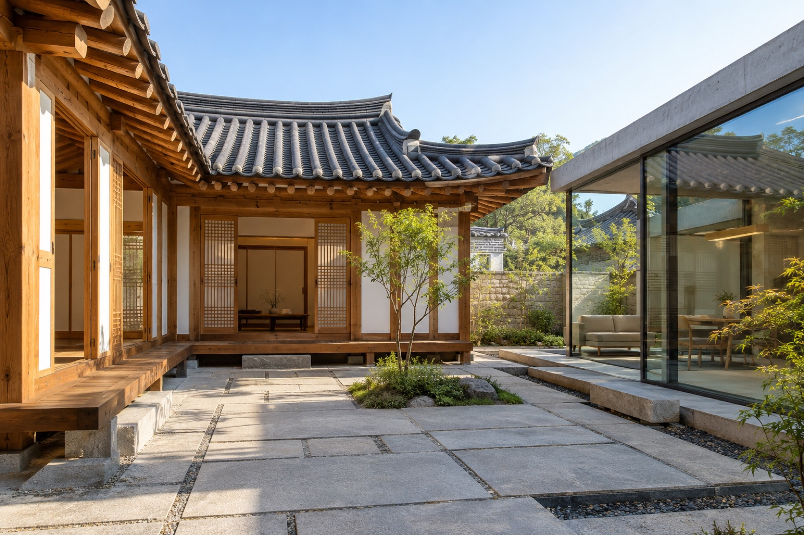
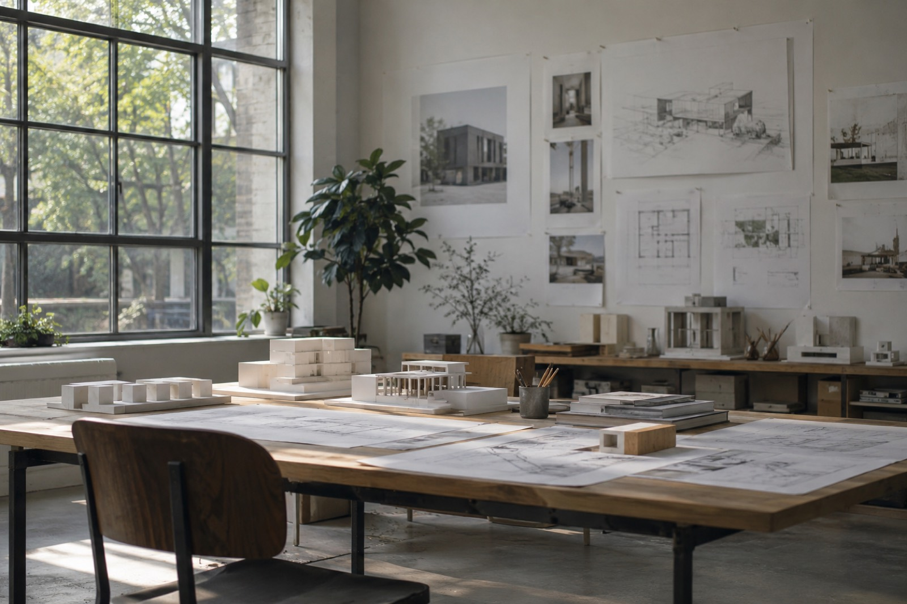

경사지 집
Hillside House
비탈진 골목의 높이 차를 그대로 받아 아래층은 콘크리트로 땅에 묻고, 위층은 목재 루버로 감싸 길과 거리를 두었습니다.
| 위치 | 서울 |
| 용도 | 단독주택 |
| 규모 | 지상 2층 |
| 연면적 | 186㎡ |
| 준공 | 2025 |
| 사진 | AI 생성 이미지 (데모) |

단독주택 · 서울 · 2025

근린생활시설 · 서울 · 2024

카페 · 경기 · 2024

한옥 리노베이션 · 서울 · 2023
비탈진 골목의 높이 차를 그대로 받아 아래층은 콘크리트로 땅에 묻고, 위층은 목재 루버로 감싸 길과 거리를 두었습니다.
| 위치 | 서울 |
| 용도 | 단독주택 |
| 규모 | 지상 2층 |
| 연면적 | 186㎡ |
| 준공 | 2025 |
| 사진 | AI 생성 이미지 (데모) |
1층 카페는 골목으로 열고, 위층 사무실과 주거는 깊은 창으로 시선을 걸렀습니다. 동네의 붉은 벽돌을 이어 썼습니다.
| 위치 | 서울 |
| 용도 | 근린생활시설, 주거 |
| 규모 | 지상 4층 |
| 연면적 | 412㎡ |
| 준공 | 2024 |
| 사진 | AI 생성 이미지 (데모) |
목구조를 드러내고 정원 쪽 벽을 통창으로 비워, 앉는 자리마다 숲이 보이도록 했습니다.
| 위치 | 경기 |
| 용도 | 카페 |
| 규모 | 지상 1층 |
| 연면적 | 238㎡ |
| 준공 | 2024 |
| 사진 | AI 생성 이미지 (데모) |
기존 한옥은 고쳐 쓰고, 부족한 생활 공간은 마당 한쪽에 유리 상자로 더했습니다. 두 건물은 마당을 함께 씁니다.
| 위치 | 서울 |
| 용도 | 단독주택 (한옥) |
| 규모 | 지상 1층 |
| 연면적 | 142㎡ |
| 준공 | 2023 |
| 사진 | AI 생성 이미지 (데모) |

샘플건축사사무소는 땅과 동네의 조건에서 출발해 오래 쓰이는 집과 작은 상업 공간을 설계합니다.
주택, 근린생활시설, 한옥 리노베이션을 주로 합니다. 설계부터 감리까지 같은 팀이 끝까지 맡습니다.
(이 사무소와 작품은 홈페이지 예시를 위한 가상의 내용입니다.)